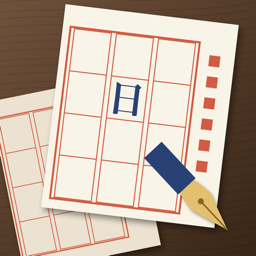

去年と並ぶ原稿日記
縦書きの原稿用紙に書く日記。去年のきょうの紙と、となりに並びます。
1日1枚、縦書きの原稿用紙に日記を書くアプリです。下の欄に打った字が、上の原稿用紙のマスに1字ずつ縦書きで入ります。
- 縦書きの原稿用紙：句読点はマスの右上に、行の頭に来る「。」は前の行の下にぶら下げ、小さい「っ」「ゃ」は右上に、「ー」やかっこは縦向きに。原稿用紙の決まりどおりに組みます
- 去年と並ぶ：最初の画面に、その日の紙と、同じ月日の去年・おととしの紙が、右から左へ並びます。前の年に書いた日記を、同じ日に読み返せます
- どの紙にも、欄外に年月日と曜日（例：二〇二六年十一月二十六日 木曜日）が入ります。何年に書いたか、いつでも分かります
- 200字詰めと400字詰め。日記の棚（カレンダー）・さがす・天気・書く時刻のおしらせ
- 文だけを保存するので、容量はほとんど増えません。打つたびに自動で残します。バックアップのファイルを作れます
- 登録・課金はありません。画面のいちばん下に小さな広告が出ます（字を打っている間は出ません）